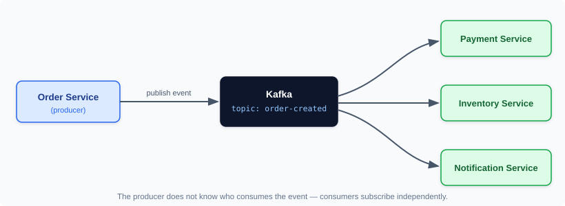
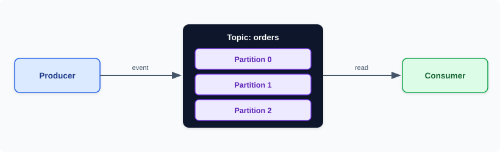
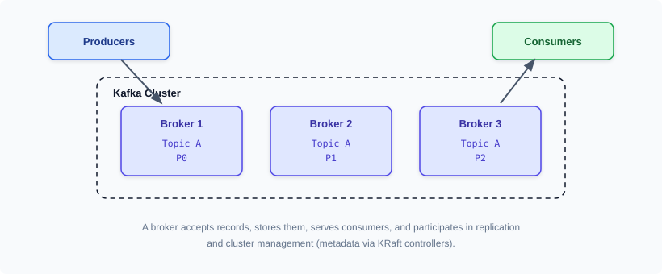
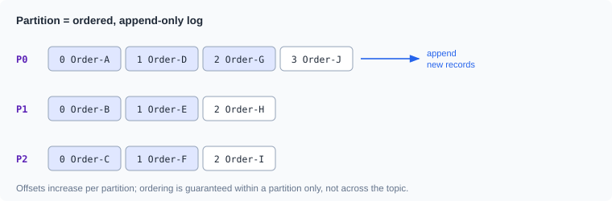
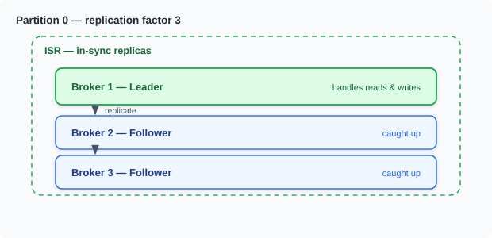
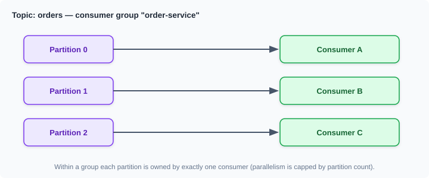
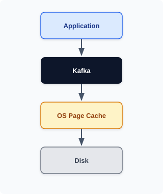
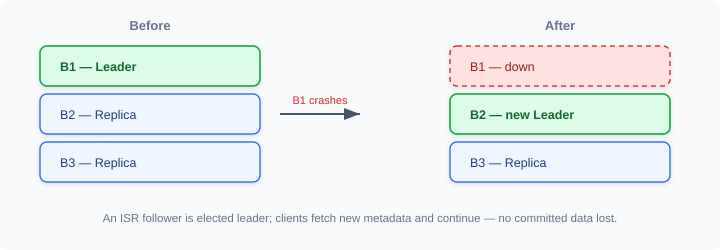
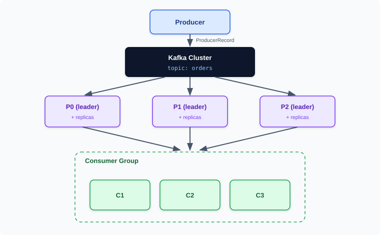
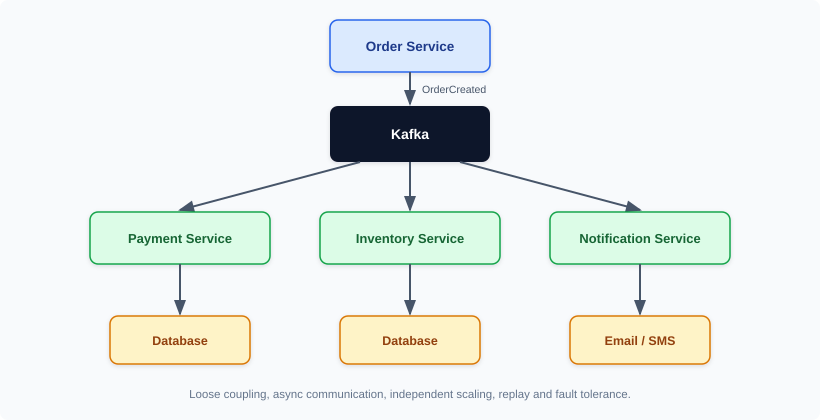

| Partition | Leader | Replicas |
|---|---|---|
| Partition 0 | Broker 1 | Broker 2, Broker 3 |
| Partition 1 | Broker 2 | Broker 3, Broker 1 |
| Partition 2 | Broker 3 | Broker 1, Broker 2 |
Kafka is a distributed event streaming platform designed for high-throughput, fault-tolerant, and scalable messaging.
Kafka is a distributed data store optimized for ingesting and processing streaming data in real-time.
Streaming data
is data that is continuously generated by thousands of data sources, which typically send the data records in simul-taneously. A streaming platform needs to handle this constant influx of data, and process the data sequentially and incrementally.
Kafka is primarily used to build real-time streaming data pipelines and applications that adapt to the data streams.
Kafka combines messaging, storage, and stream processing to allow storage and analysis of both historical and real-time data.
Kafka is a distributed, durable, append-only commit log. Unlike a traditional queue it does not delete a message when it is read — each consumer tracks its own position and can rewind and reprocess.
Imagine an e-commerce application: when a customer places an order, several things may need to happen: payment, inventory updates, notifications, analytics, and so on. Calling each service directly creates tight coupling, synchronous communication, failure propagation, and difficult scaling. Kafka introduces an intermediary. Producer publishes one event; each interested service consumes it independently — the producer does not need to know who consumes it.

Kafka stores events in topics, and topics are divided into partitions. Each partition is an ordered, append-only log. Producers write to a topic; consumers read from its partitions.

A broker is a Kafka server that accepts records, stores them, serves records to consumers, participates in replication, and participates in cluster management. A group of brokers forms a cluster.

A Kafka cluster is a group of brokers working together. With three brokers, three partitions, and replication factor 3, each partition has a leader on one broker and replicas on the others, spread so the load and leadership are balanced.
| Partition | Leader | Replicas |
|---|---|---|
| Partition 0 | Broker 1 | Broker 2, Broker 3 |
| Partition 1 | Broker 2 | Broker 3, Broker 1 |
| Partition 2 | Broker 3 | Broker 1, Broker 2 |
A topic is a logical name for a stream of events, like a category or table name — for example orders, payments, shipments, notifications. A topic is split into one or more partitions (partition-0, partition-1, partition-2).
A topic with multiple partitions does not provide one globally ordered sequence. Ordering is guaranteed only within an individual partition.
A partition is Kafka's fundamental unit of ordering, parallelism, storage, and consumption. Each partition is an independent ordered log; records are appended and assigned an increasing offset.

Partitioning provides scalability and parallelism: different partitions can be handled by different brokers and consumed by different consumers at the same time (P0→Consumer 1, P1→Consumer 2, and so on). Partition count is the ceiling on consumer parallelism within a group.
A Kafka message is technically a record. A record contains a key, a value, a timestamp, optional headers, and — once stored — a partition and an offset. Kafka treats keys and values as opaque bytes; serialization is the client's job.
Every record within a partition receives a monotonically increasing offset (0, 1, 2, 3…). The offset is the record's position in that partition.
An offset is not globally unique across a topic. A record's logical position is identified by topic + partition + offset.
A partition is implemented as an append-only log: Kafka appends new records rather than modifying old records in place. This append-only design is what makes writes fast and reads sequential.
| Kafka Concept | Analogy |
|---|---|
| Topic | Folder / logical stream |
| Partition | Independent ordered log |
| Segment | Physical chunk/file of a partition |
| Record | Entry in the log |
| Offset | Position of a record |
A partition is not one physical file: Kafka divides a partition's log into multiple segment files. A topic contains partitions, and each partition contains segments, which contain records.
Kafka does not keep an entire partition in one huge file. A partition is divided into segment files, each named by its base offset:
Partition 0
00000000000000000000.log
00000000000000123456.log
00000000000000234567.logAs a segment reaches its configured limit, Kafka rolls to a new segment. Older segments are eventually deleted according to retention policies.
Kafka does not delete a record immediately after a consumer reads it — that is what lets multiple independent consumer groups read the same events. Instead, whole segments age out by time or size.
| Setting | Meaning |
|---|---|
log.retention.hours=168 | Retain data for ~7 days (time based). |
retention.bytes=10737418240 | Remove older segments once the size limit is reached. |
cleanup.policy=compact | Keep at least the latest value per key (changelog topics); a null value is a tombstone. |
Kafka replicates each partition across brokers. One replica is the leader (handles all reads and writes); the others are followers that copy the leader's log. The set of replicas fully caught up with the leader is the ISR (In-Sync Replicas).
If a replica falls too far behind it is temporarily removed from the ISR. If the leader fails, a replica from the ISR is elected the new leader — providing fault tolerance with no committed data loss.

A Kafka producer publishes records to a topic. A producer can specify the topic, key, value, headers, partition, and timestamp; the Java application hands an event to the producer, which writes it to the topic.
The main Java producer classes are KafkaProducer<K, V> and ProducerRecord<K, V>. Add the client library:
<dependency>
<groupId>org.apache.kafka</groupId>
<artifactId>kafka-clients</artifactId>
<version>4.1.0</version>
</dependency>The essential properties are bootstrap.servers, key.serializer, and value.serializer. Bootstrap servers are just initial discovery addresses (e.g. broker1:9092,broker2:9092); after connecting, the client obtains full cluster metadata.
Properties properties = new Properties();
properties.put(ProducerConfig.BOOTSTRAP_SERVERS_CONFIG, "localhost:9092");
properties.put(ProducerConfig.KEY_SERIALIZER_CLASS_CONFIG,
StringSerializer.class.getName());
properties.put(ProducerConfig.VALUE_SERIALIZER_CLASS_CONFIG,
StringSerializer.class.getName());ProducerRecord<String, String> record =
new ProducerRecord<>("orders", "order-101", "{\"id\":101}");| Field | Value |
|---|---|
| Topic | orders |
| Key | order-101 |
| Value | {"id":101} |
producer.send(record) is asynchronous — the record is buffered and sent by a background thread. A callback reports the result; calling .get() makes the send synchronous (blocks for the ack), which is simple but far slower.
@ asynchronous send with callback
producer.send(record, (metadata, exception) -> {
if (exception != null) {
exception.printStackTrace();
return;
}
System.out.println("Topic: " + metadata.topic());
System.out.println("Partition: " + metadata.partition());
System.out.println("Offset: " + metadata.offset());
});
@ synchronous send (blocks until acknowledged)
RecordMetadata metadata = producer.send(record).get();void main(String[] args) {
Properties properties = new Properties();
properties.put(ProducerConfig.BOOTSTRAP_SERVERS_CONFIG, "localhost:9092");
properties.put(ProducerConfig.KEY_SERIALIZER_CLASS_CONFIG, StringSerializer.class.getName());
properties.put(ProducerConfig.VALUE_SERIALIZER_CLASS_CONFIG, StringSerializer.class.getName());
try (KafkaProducer<String, String> producer = new KafkaProducer<>(properties)) {
ProducerRecord<String, String> record =
new ProducerRecord<>(
"orders",
"order-101",
"{\"orderId\":101,\"amount\":5000}");
producer.send(record, (metadata, exception) -> {
if (exception != null) {
exception.printStackTrace();
return;
}
System.out.println("Sent to partition " + metadata.partition() + " at offset " + metadata.offset());
});
}
}Kafka works with bytes. A serializer converts a Java value to a byte[] before sending (e.g. StringSerializer turns a String into bytes); the consumer's deserializer reverses it.
When a record has a key, the partitioner computes hash(key) % partitions, so records with the same key (e.g. customer-101) always land on the same partition — preserving their order. Kafka guarantees ordering within a partition, never globally across the topic. You can also target a partition explicitly:
// send directly to partition 2
ProducerRecord<String, String> record =
new ProducerRecord<>("orders", 2, "order-101", "Order Created");The producer groups records into per-partition batches to reduce network round-trips. batch.size and linger.ms control batching (trade latency for throughput). compression.type (snappy, lz4, zstd, gzip) reduces network and disk usage at a CPU cost.
| acks | Behaviour |
|---|---|
0 | Producer does not wait for any acknowledgement (fastest, data can be lost). |
1 | The leader acknowledges after accepting the record. |
all | The leader waits for the required in-sync replicas — strongest durability. |
Producers retry transient failures (governed by retries, delivery.timeout.ms, request.timeout.ms). With enable.idempotence=true (default), Kafka gives the producer an ID and per-batch sequence numbers so retries never create duplicates within a partition.
A Kafka consumer (KafkaConsumer<K, V>) reads records. It needs bootstrap.servers, a group.id, and key/value deserializers:
Properties properties = new Properties();
properties.put(ConsumerConfig.BOOTSTRAP_SERVERS_CONFIG, "localhost:9092");
properties.put(ConsumerConfig.GROUP_ID_CONFIG, "order-service");
properties.put(ConsumerConfig.KEY_DESERIALIZER_CLASS_CONFIG,
StringDeserializer.class.getName());
properties.put(ConsumerConfig.VALUE_DESERIALIZER_CLASS_CONFIG,
StringDeserializer.class.getName());A consumer group is a set of consumers cooperating to process a topic's partitions. Within a group, each partition is assigned to exactly one consumer at a time (load balancing); across groups, every group independently receives all records (broadcast).

KafkaConsumer<String, String> consumer = new KafkaConsumer<>(properties);
consumer.subscribe(List.of("orders"));
ConsumerRecords<String, String> records = consumer.poll(Duration.ofMillis(1000));
for (ConsumerRecord<String, String> record : records) {
System.out.println(record.key() + " -> " + record.value());
}void main(String[] args) {
Properties properties = new Properties();
properties.put(ConsumerConfig.BOOTSTRAP_SERVERS_CONFIG, "localhost:9092");
properties.put(ConsumerConfig.GROUP_ID_CONFIG, "order-service");
properties.put(ConsumerConfig.KEY_DESERIALIZER_CLASS_CONFIG,
StringDeserializer.class.getName());
properties.put(ConsumerConfig.VALUE_DESERIALIZER_CLASS_CONFIG,
StringDeserializer.class.getName());
properties.put(ConsumerConfig.AUTO_OFFSET_RESET_CONFIG, "earliest");
try (KafkaConsumer<String, String> consumer =
new KafkaConsumer<>(properties)) {
consumer.subscribe(List.of("orders"));
while (true) {
ConsumerRecords<String, String> records =
consumer.poll(Duration.ofMillis(1000));
for (ConsumerRecord<String, String> record : records) {
System.out.println("topic=" + record.topic()
+ " partition=" + record.partition()
+ " offset=" + record.offset()
+ " key=" + record.key()
+ " value=" + record.value());
}
}
}
}group.id joins a consumer group that shares the topic's partitions.poll() fetches batches and keeps the member alive in the group.auto.offset.reset=earliest starts from the beginning when there is no committed offset.Each received record exposes metadata: topic(), partition(), offset(), key(), value(), timestamp(), and headers().
The committed offset is the position a consumer has saved. If it has processed offsets 0, 1, and 2, the committed offset is typically 3 — the next record to read. It is stored in the internal __consumer_offsets topic.
| Strategy | Notes |
|---|---|
| Auto commit | enable.auto.commit=true + auto.commit.interval.ms=5000; simple, but understand the duplicate/loss window. |
commitSync() | Blocks until the commit succeeds; safest, lower throughput. |
commitAsync() | Non-blocking, higher throughput; needs care in error handling. |
| Per-partition | commitSync(Map<TopicPartition, OffsetAndMetadata>) for fine-grained control. |
// enable.auto.commit=false, then:
for (ConsumerRecord<String, String> record : records) {
process(record);
}
consumer.commitSync(); // poll -> process -> commit// commit one partition explicitly
Map<TopicPartition, OffsetAndMetadata> offsets = new HashMap<>();
offsets.put(new TopicPartition("orders", 0),
new OffsetAndMetadata(10));
consumer.commitSync(offsets);| Value | Meaning |
|---|---|
earliest | Start from the earliest retained record. |
latest | Start from new records only. |
none | Throw an error. |
auto.offset.reset does not override an existing valid committed offset — it only decides where to begin when none is found.
If a consumer joins, leaves, or crashes, Kafka reassigns partitions among the remaining members — consumer group rebalancing. A ConsumerRebalanceListener lets you react, typically committing progress before partitions are taken away:
consumer.subscribe(List.of("orders"), new ConsumerRebalanceListener() {
@Override
public void onPartitionsRevoked(Collection<TopicPartition> partitions) {
consumer.commitSync(); // save progress before losing partitions
}
@Override
public void onPartitionsAssigned(Collection<TopicPartition> partitions) { }
});poll() both retrieves records and maintains the consumer's membership in the group. If processing exceeds max.poll.interval.ms (or you fetch more than max.poll.records can process in time), the consumer is considered unresponsive and a rebalance may occur — so keep the loop fast.
consumer.subscribe(List.of("orders"))) lets Kafka manage partition assignment via the group.consumer.assign(List.of(new TopicPartition("orders", 0)))) gives the application manual control, without group coordination.consumer.seek(new TopicPartition("orders", 0), 100)) moves the position for replay, debugging, recovery, or reprocessing.consumer.pause(partitions) / consumer.resume(partitions)) apply backpressure without leaving the group.Headers carry metadata (event type, correlation ID, trace ID, source service) alongside the payload.
// Producer
ProducerRecord<String, String> record =
new ProducerRecord<>("orders", "101", "Order Created");
record.headers().add("event-type", "OrderCreated".getBytes());
producer.send(record);// Consumer
record.headers().forEach(header ->
System.out.println(header.key()
+ " = " + new String(header.value())));Parallelism across brokers and consumers.
Append-only writes beat random writes; storage and OS caching are used efficiently.
Fewer, smaller network round-trips.
sendfile moves data disk→network without user-space copies.
Consumer groups scale reads horizontally.
Hot reads are served from memory (next section).
Kafka relies heavily on the operating system's filesystem/page cache to serve data efficiently: writes and reads flow through the page cache, and the OS handles flushing to disk.

With replication factor 3, each partition has a leader and two replicas. If the leader's broker fails, an eligible ISR follower is elected the new leader; clients fetch updated metadata and continue with the new leader — no committed data is lost.

Creating a topic with partitions=3 and replication.factor=3 on a single-broker cluster fails: Kafka cannot place three replicas of a partition on one broker. Replication factor 3 requires at least three brokers.
Modern Kafka uses KRaft mode for metadata management instead of the older ZooKeeper architecture (ZooKeeper was removed in Kafka 4.0). A quorum of controllers manages cluster metadata, partition leadership, and coordination.

Spring for Apache Kafka wraps the Java client. A producer uses KafkaTemplate; a consumer uses @KafkaListener.
@ Producer
kafkaTemplate.send(
"orders",
orderId,
orderJson);@ Consumer
@KafkaListener(topics = "orders")
public void consume(String message) {
@ process message
}An order service publishes OrderCreated to Kafka; Payment, Inventory, and Notification services each consume it and act (write to a database, send email/SMS). This gives loose coupling, asynchronous communication, independent scaling, event replay, fault tolerance, and high throughput.
